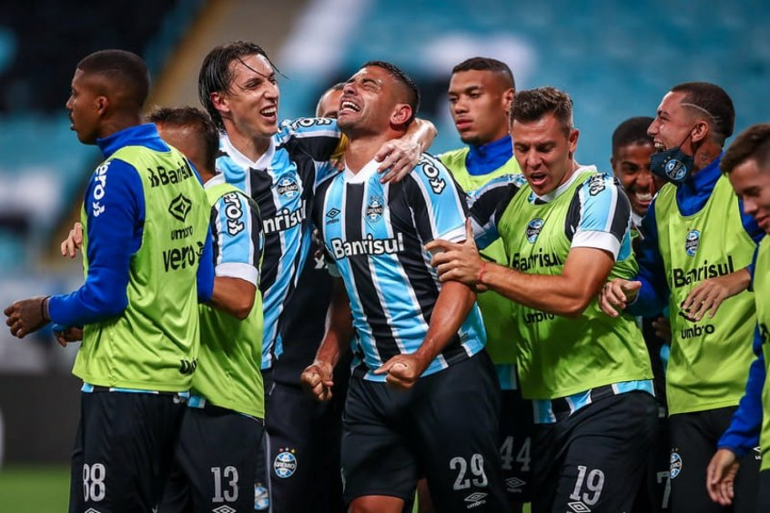
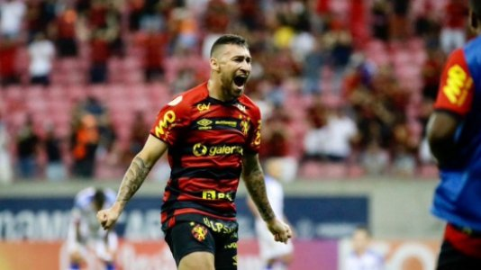
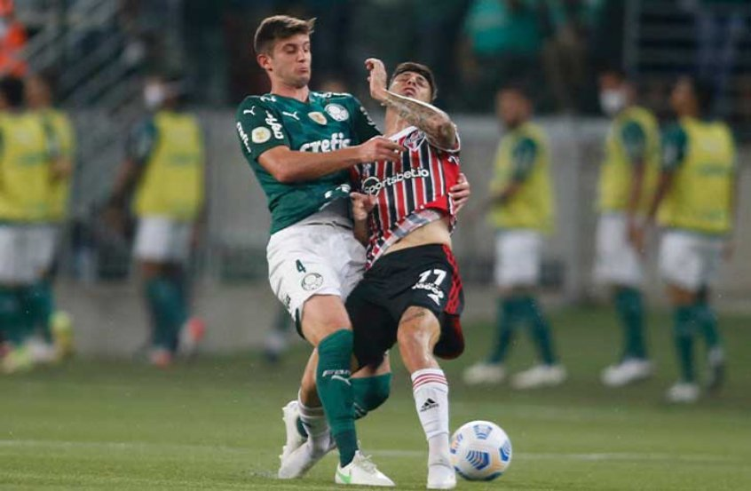
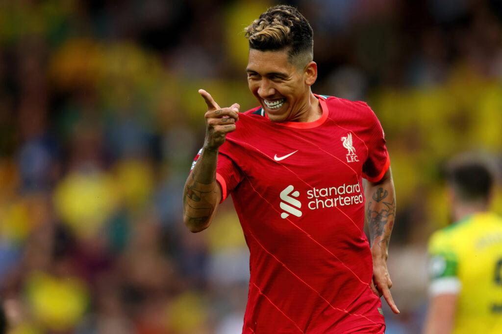
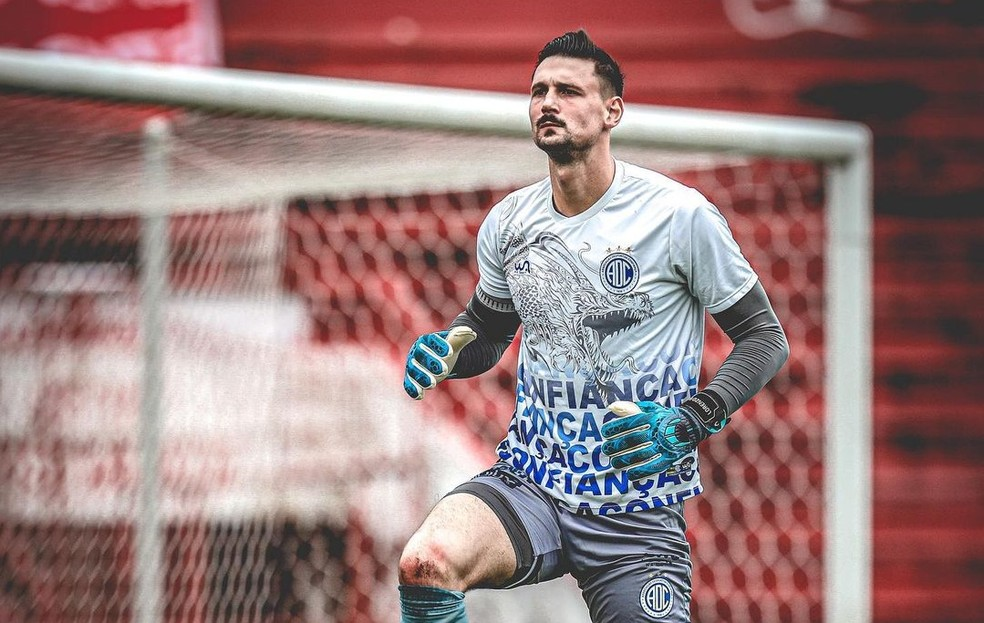

Diego Souza espera vitória do Grêmio diante da Chapecoense
Atacante crê em bom resultado do Tricolor para manter vivo a esperança de fugir do Z-4.
Sport vence o Bahia, sonha com permanência e joga o Grêmio à vice-lanterna do Brasileirão
Com dois jogos a mais em relação ao Imortal, Leão subiu para a 18ª posição, com 33 pontos, seis a menos que o Atlético-GO, último time fora da zona.
Palmeiras tem pior aproveitamento do Brasileirão jogando contra times do G-6
Verdão ainda não conseguiu vencer nenhuma das equipes que estão no topo da tabela da competição.
Premier League decide não liberar jogadores convocados; Clubes brasileiros podem ser prejudicados
Visto que a seleção brasileira terá muitos desfalques importantes, a tendência é de que jogadores do Brasileirão sejam os mais cotados para serem convocados.
Atlético-MG tem 98% de chances de título; risco de queda do Sport é de 99% e do Grêmio é de 92%
Na briga pelo G-4 e Libertadores, três times seguem colados nas chances.
Emprestado pelo Atlético-MG, goleiro Michael deixa o Confiança; tendência é de retorno a Portugal
Goleiro de 26 anos será novamente cedido para outro clube visando temporada 2022.